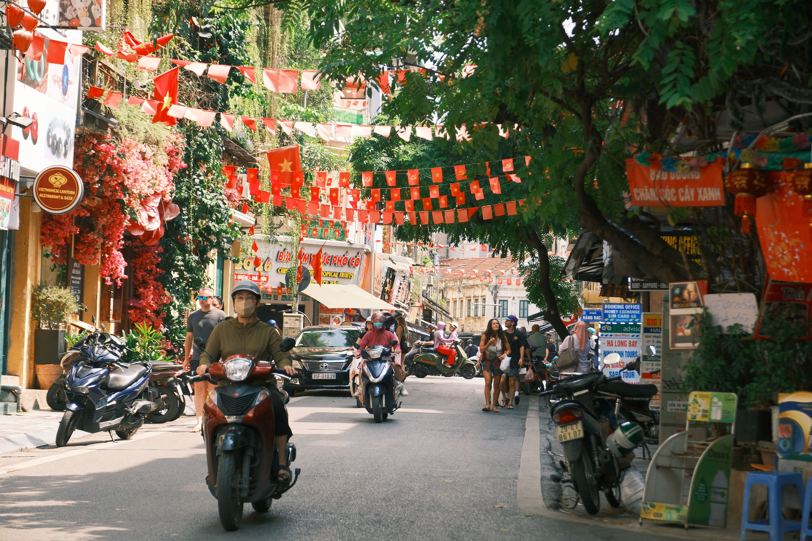

Thiên nhiên nguyên bản
Vịnh đá Hạ Long, hang Sơn Đoòng lớn nhất hành tinh, cao nguyên Đà Lạt mát quanh năm và đỉnh Bà Nà 1.487m nhìn ra biển. Bốn địa hình, bốn nhịp thở khác nhau.

Từ vịnh đá Hạ Long đến hang Sơn Đoòng lớn nhất thế giới, từ Văn Miếu nghìn năm đến phiên chợ nổi Cái Răng lúc năm giờ sáng — đây là bản giới thiệu 12 điểm đến làm nên gương mặt Việt Nam.
Chọn một danh mục để lọc bộ sưu tập. Mỗi thẻ mở ra hồ sơ điểm đến đầy đủ: câu chuyện, thời điểm đẹp nhất trong năm, gợi ý trải nghiệm và bản đồ định vị.
Việt Nam không kể một câu chuyện duy nhất. Dải đất này có ba giọng nói riêng, và hành trình đẹp nhất là hành trình nghe đủ cả ba.
Vịnh đá Hạ Long, hang Sơn Đoòng lớn nhất hành tinh, cao nguyên Đà Lạt mát quanh năm và đỉnh Bà Nà 1.487m nhìn ra biển. Bốn địa hình, bốn nhịp thở khác nhau.
Hoàng thành Thăng Long mười ba thế kỷ, Đại Nội Huế của mười ba vị vua, tháp Chăm Mỹ Sơn xây không cần vữa, Văn Miếu nghìn năm, và hai ngôi chùa Thiên Mụ, Bái Đính.
Sóng vỗ mạn ghe trên sông Hậu lúc năm giờ sáng, cây bẹo treo đầu ghe báo hàng, và một tô cao lầu trong căn nhà gỗ Hội An trước mười giờ.
Năm câu hỏi lấy từ chính nội dung phía trên. Mỗi câu trả lời đúng được 10 điểm. Đạt tối thiểu 20 điểm để mở khoá thực đơn ẩm thực Việt Nam bên dưới.
Chín món làm nên vị của dải đất này, từ tô phở Hà Nội đến khay bánh phu thê gói lá dừa.
Mười hai điểm đến và chín món ăn trong trang này chỉ là phần mở đầu. Việt Nam còn hàng trăm nơi chưa được kể ở đây: những bản làng nằm sâu trên núi, những ngôi chùa không có tên trong sách hướng dẫn, những món chỉ bán ở đúng một góc chợ và bán hết thì thôi. Phần còn lại không ai kể thay bạn được — nó đang chờ bạn tự đi, tự tìm, và tự nhớ.